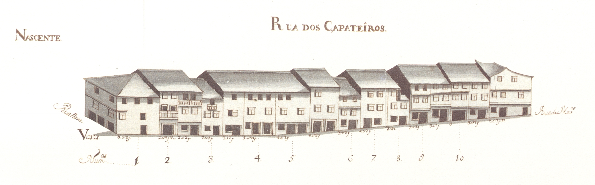

Rua dos Sapateiros e Rossio da Praça
Informações sobre a rua:
Pequena artéria, no enfiamento da rua Verde, que ligava a rua de
Maximinos à rua Nova.
Aberta na Idade Média, aqui deveriam estar arruados os sapateiros há longa data,
porque já no Tombo do Cabido, datável cerca de 1369-80, lhe era dado o nome
de Çapataria.
Com muitas casas de raiz antiga, apresentava em 1750, do lado Poente,
muitas analogias com a de Maximinos, no tipo de
casas; mas sem a qualidade de desenho e o ordenamento que se vê naquela rua.
Tinha então a maioria dos edifícios com 3 pisos, 50% dos quais de dois sobrados; as
janelas eram do tipo bracarense, havendo, contudo, no terceiro piso, muitas com portadas
de madeira. Do lado Poente o primeiro piso teria lojas de comércio, detectáveis pela
largura da porta, a toda a extensão da casa. Do lado Nascente a tipologia é outra,
apesar de haver doisa casos, os prazos n.ª 2 e 10, de porta ampla; aqui aparece-nos
outro tipo de abertura que irá ser extremamente frequente em ruas secundárias de
extra-muros: trata-se da conjugação de uma porta normal ladeada por uma janela,
separadas por uma fina coluna de pedra de secção rectangular.
Em complemento desta rua está o Rossio da Praça, que comunicava a Oeste
com a Pracinha.
Implantado numa zona com um pequeno declive, apresentava habitações de três pisos,
sobradadas, no lado Norte e de 2 pisos no Sul, sendo estas muito semelhantes às do lado
Nascente da rua dos Sapateiros.
Das 15 casas do lado Nascente e 23 do Poente, eram prazos do Cabido 9 e 7 casas,
respectivamente. No Rossio da Praça havia 4 casas do lado Sul e 5 do
Norte, havendo só dois prazos do Cabido, no Sul.
Com o alargamento da rua em 1890, toda a linha de fachadas de Nascente
desapareceu. O alçado Poente, a partir do prazo n.º 15 e em direcção a Norte, bem como o
Rossio da Praça (lado Sul) mantiveram-se.
Actual fragmento da rua D. Frei Caetano Brandão.
Pertence ao n.º 13 da Rua Nova de Sousa, para onde tem a
frontaria e seventia principais.
Esta casa foi da sogra de Luís de
Abreu, Helena Vaz, filha de
Manuel de Freitas.
Confronta, do norte, com casa foreira à comenda de Rio Frio.
Confronta, do norte, com casa foreira à comenda de Rio Frio e, do sul, com
casa da cororaria.
Confronta, do norte, com casa foreira à comenda de Rio Frio.
O enfiteuta herdara de seus pais, João de
Barros e Francisca
Pereira.
Confronta, do sul, com a casa n.º 9, foreira à obra da Sé.
Pertencera a Manuel Gomes de
Mascarenhas.
É foreira à obra da Sé, à qual paga 2 galinhas. Está emprazada a Maria da Cunha, viúva de Luís Moreira.
O censo é pago por Miguel Soares,
sapateiro.
Confronta, so sul, com casa foreira à cororaria.
Entre os anos de 1509 e 1561 o n.º 13 esteve
unido a esta casa, constituindo uma só morada, com serventia, pelo n.º 4, da
Rua da Vielinha. Desta casa,
situada na «agiela da rua», foram feitas diversas escrituras à face do prazo
principal depois de 1686.
O prao é constituído por uma casa situada na agiela da Rua da Vielinha, (a que corresponde o n.º
5) e da qual, a partir do ano de 1686, foram feitas várias
escrituras de emprazamento.
Esta casa é foreira à obra da Sé e encontra-se emprazada a Simão da Costa, sapateiro, casado com Antónia Rodrigues. Paga de foro 340
reis.
Até 1515 faziam parte deste prazo os nº.1 e 3 da Rua da Vielinha.
O censo é pago por José Rodrigues
Zenha.
No ano de 1679 foi-lhe incorporada uma cozinha pertencente ao
n.º 2.
O foro é respeitante à cozinha, dado que o resto da casa não pertence ao
cabido.
Casas:
- Número: 1
Enfiteuta:
Foro:
Descrição:
- Número: 2
Enfiteuta: Luís de Abreu, sapateiro
Foro: 300 reis e 2 galinhas
Descrição:
- Número: 3
Enfiteuta: António Vieira de Araújo
Foro: 340 reis e 2 galinhas
Descrição:
- Número: 4
Enfiteuta: Quitéria Maria
Foro: 480 reis
Descrição:
- Número: 5
Enfiteuta: Manuel Jácome
Foro: 400 reis e 2 galinhas
Descrição: - Número: 6
Enfiteuta: Vicente de Barros
Foro: 260 reis e 2 galinhas
Descrição:
- Número: 7
Enfiteuta: Diogo de Barros, sapateiro, casado com Gracia de Faria
Foro: 220 reis e 2 galinhas
Descrição: - Número: 8
Enfiteuta: Ana Maria Ribeiro, viúva
Foro: 160 reis e 2 galinhas
Descrição:
- Número: 9
Enfiteuta:
Foro:
Descrição:
- Número: 10
Enfiteuta:
Foro: 54 reis (de censo)
Descrição:
- Número: 11
Enfiteuta: Pedro Loureiro
Foro: 340 reis e 2 galinhas
Descrição:
- Número: 12
Enfiteuta: António Pereira de Barros, Reitor da freguesia de Adaúfe
Foro: 380 reis e 2 galinhas
Descrição:
- Número: 13
Enfiteuta: Josefa Maria, viúva
Foro: 1460 reis e 2 galinhas
Descrição:
- Número: 14
Enfiteuta:
Foro:
Descrição:
- Número: 15
Enfiteuta: António de Azevedo, sapateiro, casado com Teresa de Sousa
Foro: 640 reis e 2 galinhas
Descrição:
- Número: 16
Enfiteuta: Manuel da Costa, sapateiro
Foro: 460 reis e 2 galinhas
Descrição: - Número: 17
Enfiteuta:
Foro: 108 reis (de censo)
Descrição:
- Número: 1
Enfiteuta: Benta de Araújo
Foro: 200 reis e 2 galinhas
Descrição:
- Número: 2
Enfiteuta: Manuel da Silva, padeiro
Foro: 15 reis
Descrição:


